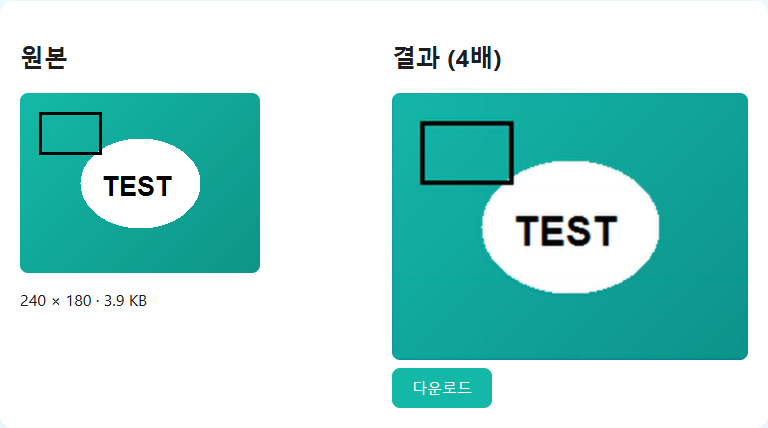

IMAGE TOOLBOX / GUIDE
AI Image Upscaling: What It Can and Can't Do
No marketing gloss: what the technology really does, and where it stops.
What AI upscaling actually does
The upscaler on this site runs a lightweight ESRGAN-family model directly in your browser. During training, the model learned statistical patterns of the form "a low-resolution patch that looks like this usually came from a high-resolution patch that looks like that." When it enlarges your image, it uses those patterns to fill in edges and textures plausibly, which looks much sharper than simply stretching pixels.
What it cannot do
The key point: it does not recover information that was never in the file. It infers convincing detail; it does not retrieve the lost original. That leads to clear limits:
Badly blurred or out-of-focus photos. If the shapes themselves are smeared, there is little for the model to work from, so the improvement is small.
Extremely tiny sources. When there are barely any pixels to begin with, the enlarged result is closer to invented detail than real detail.
Face "restoration". This is not a face reconstruction tool. It sharpens the edges and textures that are already in the photo; it does not create expressions or detail that were not there.
When it works best
Sources that are reasonably sharp but just low in resolution: a well-focused photo taken at a small size, or an older picture that only survives at low resolution. There is enough real pattern left for the model to build on.
More magnification is not automatically better. If the image is already close to the size you need, 2x is enough; consider 4x only for very small originals. The larger the scale factor, the more of the result is inferred rather than present in the source.

One practical limit: this tool accepts images up to 1000×1000 pixels, because the model runs on your device. Try the upscaler and judge the result yourself.
How this compares with server-based upscalers
Most free AI upscaling sites run larger models on server GPUs, which means you have to upload your photo to get a result. This tool takes the opposite trade-off: a small model (esrgan-slim) that runs entirely in your browser, so there is no upload at all. The honest downside is that a smaller model can produce less impressive results than a heavy server-side one. If privacy or a quick check matters most, this fits; if you need the maximum possible quality and are fine uploading, a server-based service may do better.
FAQ
Can it restore a blurry photo?
To a degree it improves clarity, but it cannot bring back detail that is completely gone. Heavy blur or bad focus limits the gain.
How many times can I enlarge?
Up to 4x, done internally as two 2x passes. The higher the factor, the more detail is inferred.
Does it reconstruct faces like some other AI tools?
No. It only sharpens edges and textures already present in the photo.
Does it work on illustrations?
It applies, but the model leans toward photos, so clean line art may get softened in a way that looks different from photos.
Will upscaling the result again improve it?
No. A 4x run already includes two AI passes. Feeding the result back in layers inference on inference and tends to add smudgy artifacts.
How long does it take?
It depends on the image size and your device, since all processing happens in your browser. Slower devices will take longer.